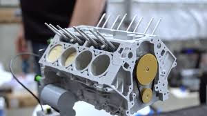
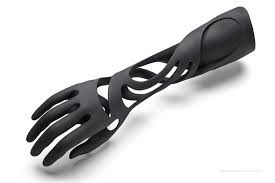

Mechanical
Rapid manufacturing technology is mostly useful to automobile industry where it can reduce the weight by giving the same impact strength and allowences.We are specialized in making the mechanical prototype models by using FDM techinque

Protoype
By using rapid manufacturing their is any limitation for design complexity we can make as the customer the needs and it can used for testing.We are here to make prototype model as the customer needs.

Medical
By using rapid manufacturing techinques we can make the prosthetic Body parts like Arm,Leg..etc